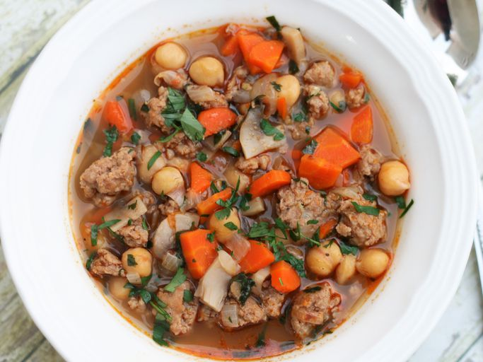

Italian Sausage and Bean Soup

Description
Yummy! This soup is great! I make this soup when I make an Italian dinner for guests and
everyone wants the recipe. It's also great on those cold winter days where suppers call for
a hot and delicious soup. A combination of sausage and vegetable in a beefy broth. This may
be made a day in advance. Tastes even better the second day. Enjoy!
Ingredients
- 1 pound Italian turkey sausage, casings removed
- 2 carrots, thinly sliced
- 1 large onion, chopped
- 1 cup thinly sliced mushrooms
- ⅓ cup chopped fresh parsley, divided
- 1 clove garlic, minced
- 3 cups water
- 1 (15 ounce) can garbanzo beans (chickpeas)
- 2 cubes beef bouillon
- ½ teaspoon dried sage
- salt and ground black pepper to taste
Directions
- Heat a pot over medium heat. Cook and stir turkey
sausage in the hot pot until browned and crumbly, 5 to 7 minutes.
- Stir carrots, onion, mushrooms, 1/4 cup parsley, and garlic into sausage.
Cook and stir until onion is soft, 7 to 10 minutes.
- Pour water, garbanzo beans with liquid, beef bouillon cubes, and sage into sausage
mixture. Bring to a boil, cover the pot, reduce heat to low, and simmer until carrots
are tender, about 10 minutes. Skim and discard any accumulated fat.
Season with salt and pepper; garnish with remaining 4 teaspoons parsley.